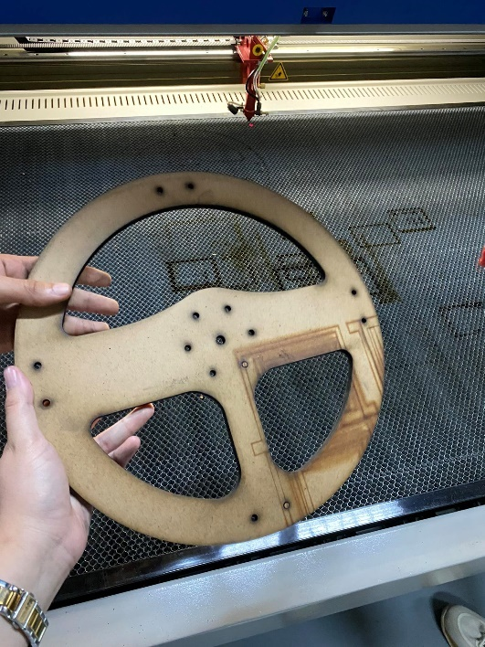
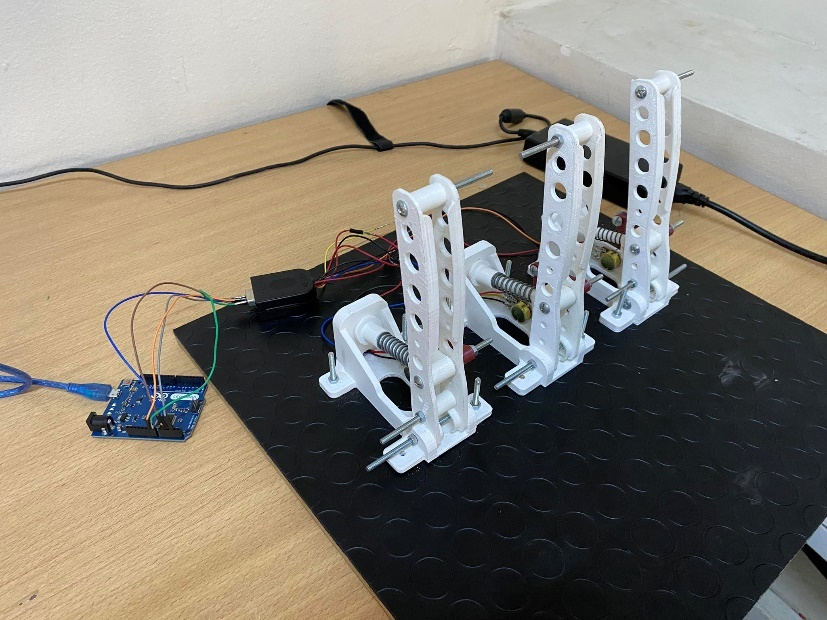
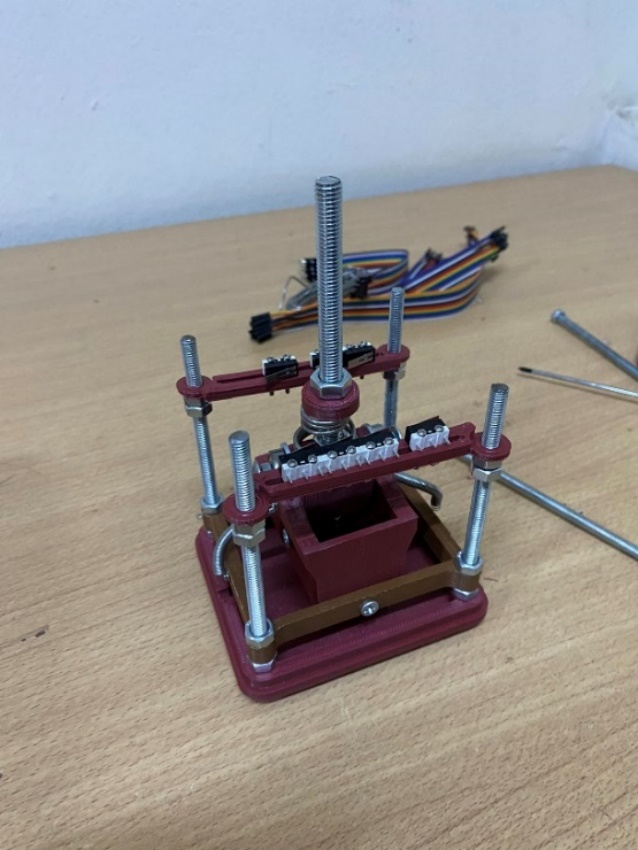
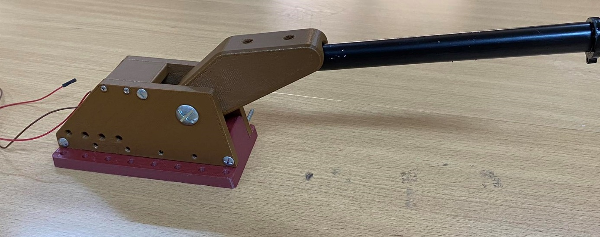
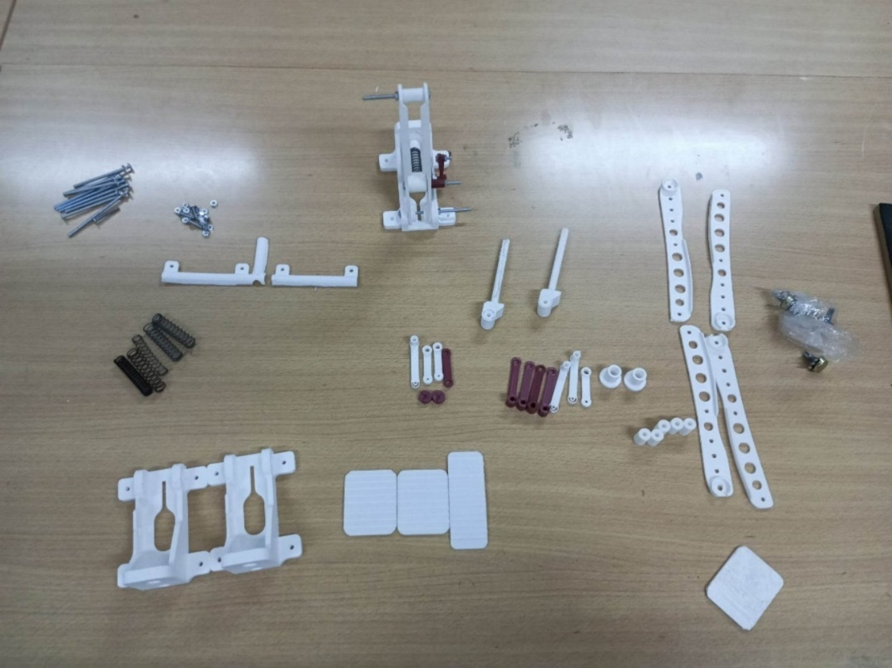
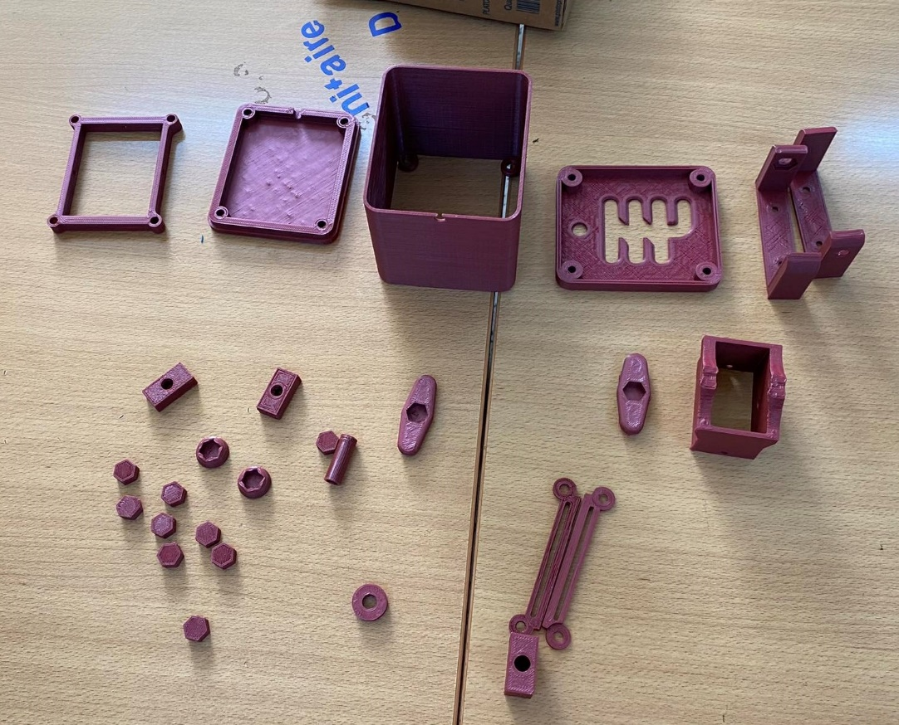
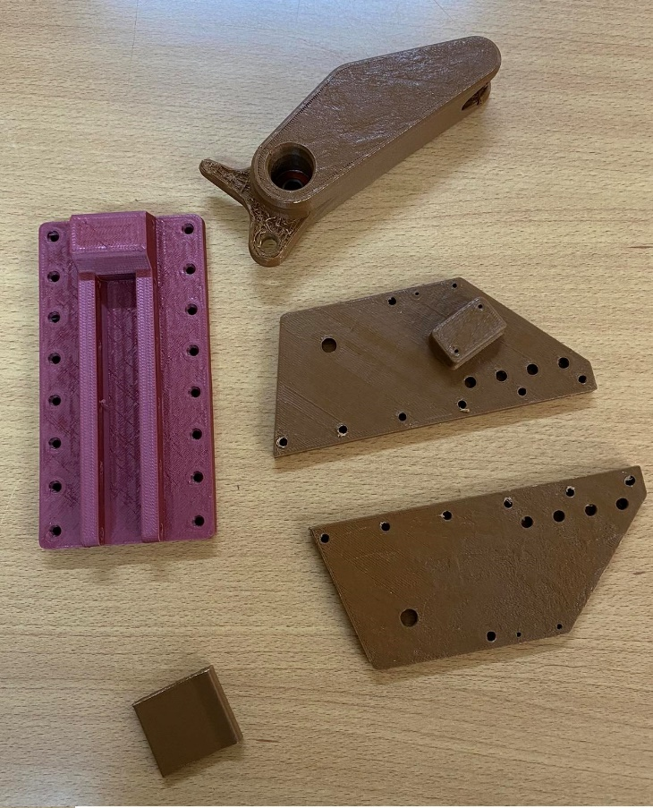
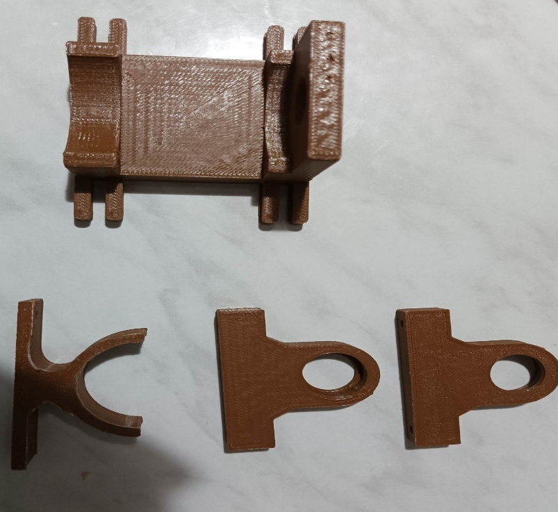

01 STEERING
Steering wheel
A rotary encoder reads wheel rotation; a motor and transmission mechanism provide the intended force-feedback response.
ROTARY ENCODER · DC MOTORFINAL-YEAR PROJECT / TUNISIA · 2023
A hands-on racing simulation cockpit built around the driver's controls — from the steering wheel and pedals to the shifter and handbrake.

A steering wheel should turn. A pedal should push back. This project brings the familiar motions of driving into a physical racing simulator cockpit.
Developed by Malek Ismail and Emir Zouabi as their final-year project at AJST FabLab Solidaires, the build combines fabricated controls with an interactive Unity simulation. The team documented the design, wiring and assembly in their project report.
Explore the project photosEach component was designed, assembled and wired as part of a real, hands-on build. The project report documents the prototypes and their mechanisms.
A rotary encoder reads wheel rotation; a motor and transmission mechanism provide the intended force-feedback response.
ROTARY ENCODER · DC MOTORPrinted pedal assemblies use springs and potentiometers to turn foot movement into a driver input.
SPRINGS · POTENTIOMETERSThe hand-built gearbox uses limit switches to detect gear changes and report the selected position.
MECHANICAL SWITCHESA separate lever and limit switch add a dedicated hand-operated input to the cockpit.
LEVER · LIMIT SWITCHAt the heart of the controls
The project report identifies an Arduino Leonardo as the microcontroller connecting the cockpit inputs.
These are the project's own photographs, reproduced from the final-year report. They show the physical prototypes and fabricated parts — not CAD renders.
Back to the cockpit controls






The report describes an Arduino-based hardware system alongside a Unity simulation. It also details how the steering wheel, shifter, handbrake and pedals are assembled and wired.
The repository includes the Unity car-driving and camera scripts found in the supplied project. Third-party road and terrain assets and generated editor data are intentionally left out.
Watch the original project demo on LinkedIn. The video is hosted by its original publisher; playback may require LinkedIn access.
Watch the project video